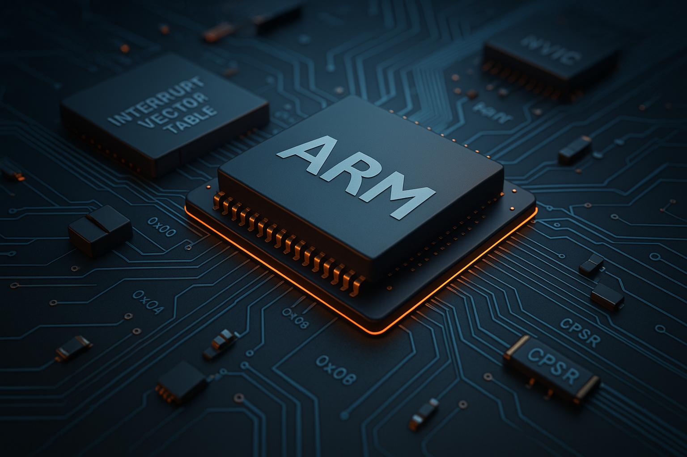

Altıncı derste, ARM mimarisinde kesmelerin yapısı ve sistem açılışındaki rolleri teknik olarak
analiz edilmektedir. IVT (Interrupt Vector Table) kullanılarak sistemin başlangıç süreci
anlaşılmakta ve her bir kesmenin sistem içerisindeki yeri açıklanmaktadır.
NVIC mimarisi, klasik mikrodenetleyici sistemleriyle karşılaştırmalı olarak incelenmekte; Little
Endian veri yerleşimi, inline fonksiyonların derleyici optimizasyonlarına etkisi ve bit-banding’in
neden yaygın tercih edilmediği gibi konular teknik düzeyde değerlendirilmektedir.
Ders, CMSIS ile yazılımın donanım üzerindeki kontrolünü düzenleme yollarını detaylandırarak,
load-store mimarisi ve volatile kullanımı gibi ARM çekirdeğine özgü yapıların pratikteki
karşılıklarını sunmaktadır.

İşlemci çekirdeği, çevresel birimler ve bellek yapıları arasındaki ayrımlar detaylandırılmıştır.
Internal ve external peripheral kavramları, system memory, aliasing, boot seçenekleri, vector table
gibi donanım seviyesindeki kritik başlıklar ele alınmaktadır.
Floating point unit, stack pointer, link register gibi temel yapılar üzerinden uygulamalı
açıklamalar yapılmıştır. Gömülü sistemlerde başlangıç süreçleri için sağlam bir temel oluşturur.

Bit manipülasyonunun donanım seviyesindeki önemi, register yapıları, CMSIS standardı gibi yazılım
soyutlama yöntemleri detaylı şekilde incelenmektedir. Donanım katmanları ve performans ilişkisi
açıklanır.

ARM çekirdek yapısı, Thumb/ARM modları, veri yolları gibi donanım temelleri detaylandırılmıştır.
Gerçek zamanlı sistemlerde tercih edilen yapıların teknik temelleri işlenmektedir.

RISC ve CISC yapıları karşılaştırılmış, ARM'ın neden tercih edildiği açıklanmıştır. Komut yapısı,
veri yolları, temel elektronik elemanlar ve haberleşme prensipleri de ele alınmaktadır.

Mikroişlemci ile mikrodenetleyici kavramları arasındaki farklar açıklanmakta, ARM mimarisinin tarihi
ve sektörel önemi üzerinde durulmaktadır. Harvard ve Von Neumann mimarileri de ele alınmıştır.